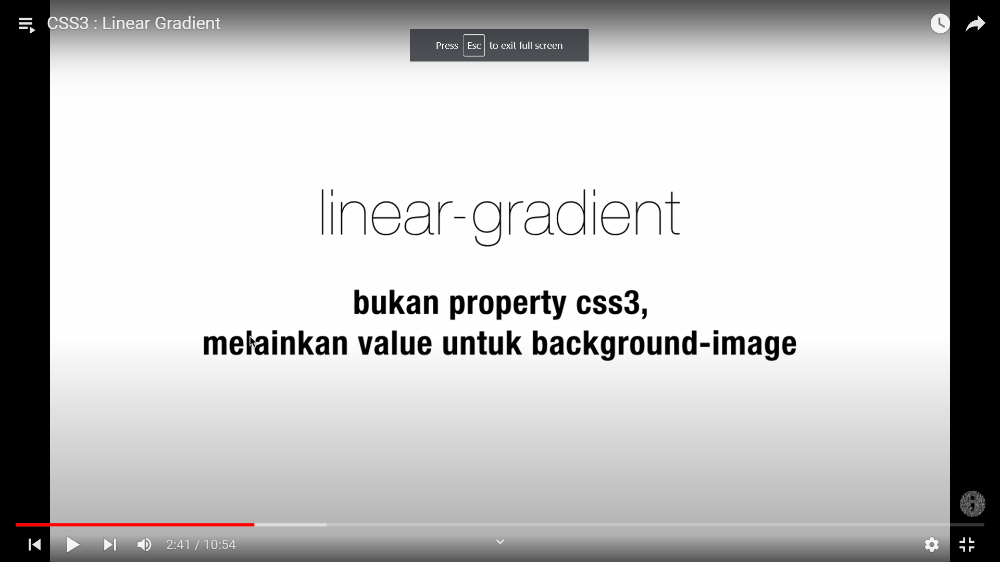

teknik untuk memberikan gradasi pada elemen
memberikan gradasi warna secara garis lurus
background-image: linear-gradient(sudut/arah,warnaawal,.....,warnaakhir)
untuk properti arahnya
untuk menggunakan linear-gradient, background-color diganti menjadi background-image: linear gradient(warna awal,warna akhir)
jika ingin tambah warna tinggal beri koma di paling kanan
kita bisa juga memberi bobot pada warnanya, misal (to left, red 10%, green, red 60%)